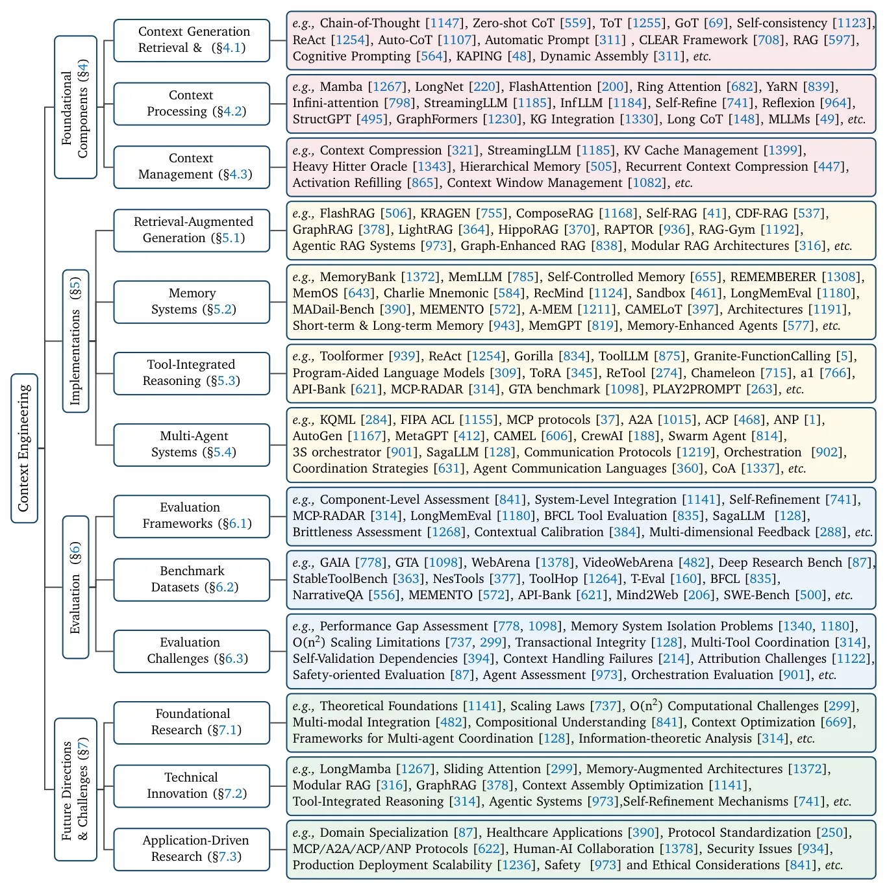
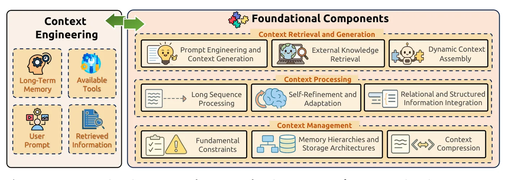
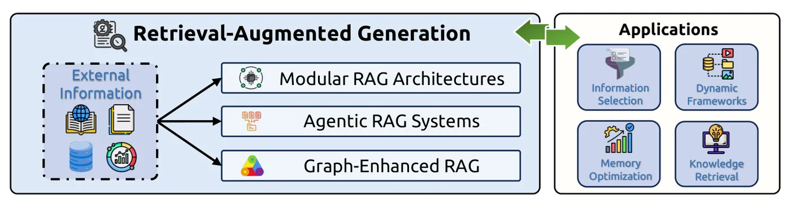
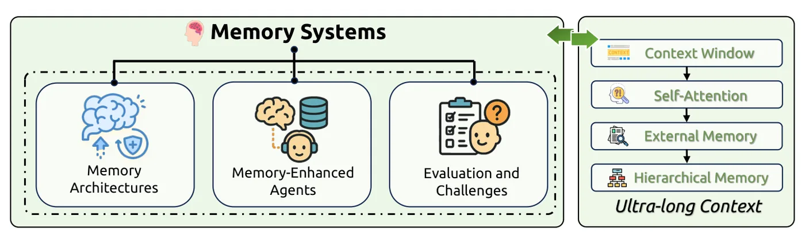
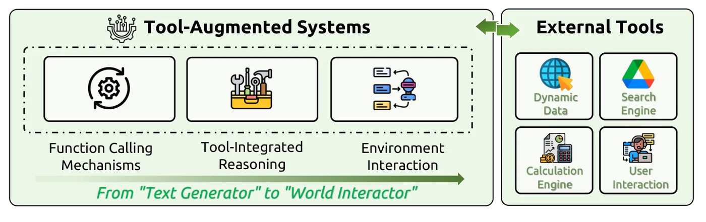
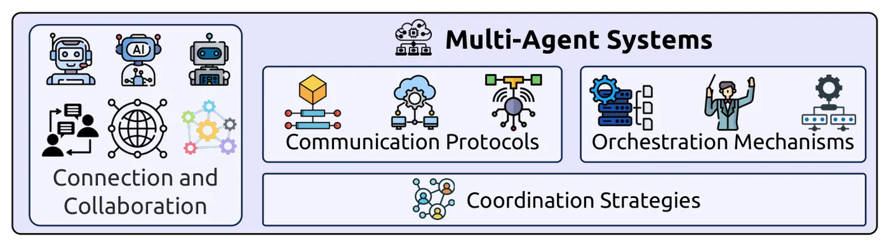
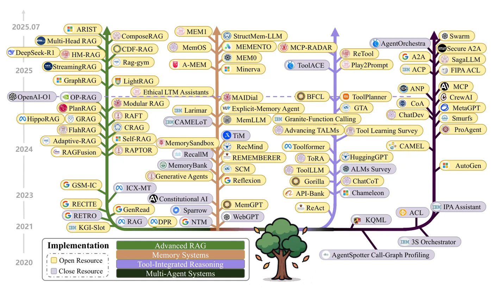

Paper
A Survey of Context Engineering for Large Language Models
In short
Modern LLM systems don't send a prompt; they assemble a context out of instructions, retrieved documents, tool definitions, memory and shared state. This survey formalises that assembly as <strong>context engineering</strong>, defines it as an optimisation problem over context-building pipelines under a hard window constraint, and uses it to unify five research areas that had been growing separately.
The organising structure is three foundational components — retrieval and generation, processing, management — feeding four system implementations: RAG, memory systems, tool-integrated reasoning, and multi-agent systems.
Its headline claim is an asymmetry: context engineering has made models very good at <em>understanding</em> complex input, and has not made them correspondingly good at <em>producing</em> complex long-form output. Worth noting that this is an impression formed from reading 1,400 papers, not something the authors measured.
Contents
01The problem
Everyone who has built anything on top of a language model has had the same experience: the model is capable, and yet the thing you built is unreliable, and the difference between the two turns out to live entirely in what you put in front of it.
For the first few years after GPT-3, the craft of putting things in front of a model had a name — prompt engineering — and a shape. You wrote a string. You tried another string. You kept the one that worked. The whole discipline fit inside a text box, and the skill was essentially literary: phrasing, examples, tone, a few incantations like let's think step by step that turned out to be worth a surprising number of accuracy points.
That description stopped matching reality some time around 2023. The systems people actually ship now do not send a string. They assemble something: a system instruction written by one team, a handful of documents pulled from a vector database at request time, the JSON signatures of a dozen tools the model is allowed to call, a summary of what the user said three sessions ago, the current state of a workflow that four other agents are also editing, and — somewhere at the end — the thing the user actually typed. Calling that a prompt is like calling a distributed system a script. The word has stopped carrying the weight.
Meanwhile the research had fragmented. Retrieval-augmented generation grew its own conference tracks. Long-context attention became a subfield of systems engineering. Memory architectures borrowed from cognitive psychology. Tool use split into function calling, agentic reasoning, and environment interaction. Multi-agent coordination revived agent communication languages from the early 1990s. Each of these produced good work, and each produced it in near-isolation from the others.
The survey's authors argue that this isolation has a cost, and the cost is conceptual rather than technical. Retrieval is a way of acquiring context. Memory is a way of persisting context. Tool definitions are context. Agent messages are context. These are not five unrelated problems that happen to involve language models; they are five faces of one problem, which is deciding what information goes into a finite window and in what form. But because each was studied separately, the connections between them stayed implicit, and a practitioner trying to understand the landscape had to read five literatures to discover they were reading about the same thing.
Why the window is the constraint
Underneath the conceptual argument sits a hard engineering one. The transformer's self-attention mechanism — the operation that lets every token in the input look at every other token — costs time and memory proportional to the square of the input length. Double the context and you roughly quadruple the work. The survey cites the concrete shape of this: taking Mistral-7B from a 4,000-token input to a 128,000-token one requires about a 122-fold increase in computation, and serving a single 128,000-token request to Llama 3.1 8B can demand up to 16 GB of memory.
So context is not free real estate, and the obvious fix — just make the window bigger — runs into a second problem that is not about cost at all. Models do not use long contexts evenly. The lost-in-the-middle effect, now replicated widely, is that information placed in the middle of a long input is retrieved far less reliably than the same information placed at the beginning or the end6. The survey reports degradation of as much as 73% on extended chain-of-thought reasoning tasks when earlier results have to survive a long context to remain usable. A bigger window is not the same as a bigger working memory.
And a third problem, more basic than either: a language model is stateless. Each call is independent. Anything that needs to persist across turns — what the user prefers, what the agent already tried, what failed — has to be explicitly re-supplied every single time, by machinery outside the model. There is no native mechanism for continuity at all.
Put those together and the shape of the field becomes clear. You have a bounded, expensive, unevenly-attended, memoryless window, and essentially all of the engineering effort in modern LLM systems goes into deciding what to put in it. The survey's claim is that this deserves to be treated as one discipline with a name, rather than five subfields that occasionally cite each other.
02The core idea
The survey's central move is to stop treating the context as a string and start treating it as the output of a function you can optimise.
The starting point is the ordinary description of how an autoregressive language model works. Given some context C, the model produces an output sequence Y one token at a time, each token conditioned on the context and on everything generated so far:
In prompt engineering, C is a single static string that a human wrote. The survey replaces it with an assembly: a set of distinct informational components, each sourced and formatted by its own machinery, combined by a function A.
The six components A draws on are the survey's organising device, and they are chosen so that each maps onto an existing research area:
| Component | What it holds | Which literature owns it |
|---|---|---|
| cinstr | System instructions, rules, persona | Prompt engineering |
| cknow | External knowledge, retrieved documents, graph facts | RAG, knowledge graphs |
| ctools | Definitions and signatures of callable tools | Function calling, tool-integrated reasoning |
| cmem | Persistent information from prior interactions | Memory systems |
| cstate | Current state of the user, world, or agent system | Multi-agent orchestration |
| cquery | What the user actually asked | — |
This is the part of the paper doing the real work, and it is worth being clear about what kind of work it is. The decomposition is not a discovery; it is a naming. Nothing in it is empirically established, and no experiment could confirm or refute it. Its value is that once you accept it, five literatures that appeared to be about different subjects turn out to be about populating different slots of the same structure — and questions that were invisible inside any one of them (how much of the window should memory get, relative to retrieval?) become askable.
Context engineering as an optimisation problem
With C reframed as something constructed, the design question becomes an optimisation over the machinery that constructs it. Let F stand for the whole collection of functions involved — the assembler A, the retriever, the selector, the compressor, everything:
The survey then offers a sharper way to think about the retrieval component specifically. The intuitive goal — fetch documents similar to the query — is subtly wrong, because similarity is not the same as usefulness. Framed information-theoretically, the goal is to maximise the mutual information between the retrieved knowledge and the correct answer:
The shift is the one that happened to software when people stopped writing scripts and started designing systems. A prompt is a thing you author and inspect by reading it. A context pipeline is a thing you assemble from parts, instrument, evaluate on a distribution of inputs, and debug component by component. The survey's argument is that the industry already made this transition in practice and the vocabulary simply had not caught up.
The paper also proposes a Bayesian formulation, treating the ideal context as something to be inferred under uncertainty rather than deterministically constructed. It is presented as a principled way to handle adaptive retrieval and belief states across multi-step reasoning. Unlike the definitions above, this part is a sketch: no algorithm is derived from it and nothing in the surveyed literature is shown to implement it. It reads as an invitation rather than a result, and it is worth reading it that way.
03How it works
The taxonomy has two levels, and the split between them is the survey's main structural contribution: three foundational components that are technical capabilities, and four system implementations that combine those capabilities into things you can deploy.

The three foundational components
These are the capabilities every context-aware system needs, regardless of what it is for. The survey names them by the phase of the pipeline they occupy: getting information in, transforming it, and deciding what to keep.

Context Retrieval and Generation covers everything that produces context in the first place. This absorbs classical prompt engineering — zero-shot and few-shot prompting, chain-of-thought10 and its descendants — alongside external knowledge retrieval and the assembly function A itself. The reasoning-structure work sits here, and the reported gains are large: zero-shot chain-of-thought lifting MultiArith accuracy from 17.7% to 78.7%, Tree-of-Thoughts taking the Game of 24 from 4% to 74% by exploring a branching structure of partial solutions with backtracking, and Graph-of-Thoughts reporting 62% better quality at 31% lower cost than Tree-of-Thoughts by allowing arbitrary dependencies between reasoning steps rather than a strict tree.
Context Processing is where the quadratic-attention problem gets fought, and it is the most engineering-dense part of the survey. The approaches fall into recognisable families. Architectural replacements attack the O(n²) cost directly — state space models like Mamba achieve linear scaling with a fixed-size hidden state, and LongNet's dilated attention lets attention spans grow exponentially with distance. Position interpolation techniques such as YaRN and LongRoPE stretch a model trained on short sequences to longer ones by rescaling position indices rather than extrapolating into positions never seen in training; LongRoPE is reported to reach windows of about two million tokens. Systems-level optimisations keep the mathematics identical and make it cheaper: FlashAttention9 reorganises the computation around the GPU memory hierarchy to get linear rather than quadratic memory traffic. And eviction strategies decide what to throw away — StreamingLLM11 keeps a few early "attention sink" tokens plus a recent window and reports handling streams of up to four million tokens with a 22× speedup, while Heavy Hitter Oracle drops the KV-cache entries that receive little attention, reporting up to 29× throughput improvement.
This component also holds self-refinement — Self-Refine, Reflexion, N-CRITICS — where the model critiques and revises its own output. The survey reports GPT-4 gaining roughly 20 percentage points from iterative self-refinement8, while also noting the well-documented finding that naive self-correction prompting often fails, and that structured feedback is what makes the difference.
Context Management is about the economics of a finite window: memory hierarchies, compression, and what to do when you run out of room. The dominant metaphor is borrowed from operating systems. MemGPT3 treats the context window as main memory and external storage as disk, and gives the model function calls to page information between them — the model manages its own virtual memory. Compression techniques attack the same problem from the other side: the In-context Autoencoder reports roughly 4× compression by condensing long contexts into a small number of dense memory slots the model can attend to directly.
Almost every number in this section is a figure the survey quotes from the paper that reported it, under that paper's own experimental conditions. The survey's authors ran no experiments and made no attempt to reproduce these results or compare them on common ground. Treat them as a well-organised index of claims, not as a leaderboard.
The four system implementations
If the components are capabilities, the implementations are the four recognisable things people build with them. Each one is essentially a strategy for keeping a particular c-component supplied.

Retrieval-Augmented Generation2 keeps cknow supplied. The survey's useful contribution here is separating three generations that are often conflated. Modular RAG breaks the original retrieve-then-generate pipeline into reconfigurable stages with routing and fusion between them — FlashRAG's toolkit of 5 modules and 16 subcomponents is the cited example. Agentic RAG moves the decision into the model: rather than always retrieving, the system reasons about whether it needs to, what to ask for, and whether what came back was any good. Self-RAG does this with special reflection tokens the model emits to control its own retrieval. Graph-enhanced RAG changes the retrieval substrate from a pile of text chunks to a structured graph of entities and relations, which is what makes multi-hop questions tractable — GraphRAG, LightRAG, and HippoRAG (which runs Personalized PageRank over a knowledge graph) are the representative systems.

Memory Systems keep cmem supplied, and exist entirely because the model is stateless. The survey organises them along a temporal axis borrowed from cognitive psychology — sensory (the raw prompt), short-term (the context window and KV cache, which vanish when the session ends), and long-term (external stores that persist) — and along an implementation axis: parametric memory baked into the weights, activation memory living in runtime state, and plaintext memory retrieved as text. Several designs lean on psychology more literally: MemoryBank implements Ebbinghaus's forgetting curve to decide what to let decay, weighting retention by recency and significance.

Tool-Integrated Reasoning keeps ctools supplied and turns the model into something that can act. The lineage the survey traces runs from Toolformer4, which learned to call APIs from self-supervised data, through ReAct5, whose thought–action–observation loop remains the template for most agent frameworks, to reinforcement-learned tool use. The strongest single result quoted is ReTool, which optimised code-interpreter use with RL and reached 67.0% on AIME2024 after 400 training steps, against 40.0% for a text-only RL baseline given considerably more training — evidence that modelling tool use explicitly inside the decision process beats treating it as text to be generated.

Multi-Agent Systems keep cstate supplied across more than one model. The survey makes a nice historical observation here: this is not a new problem. Agent communication languages date to the Knowledge Sharing Effort of the early 1990s, and KQML and FIPA ACL already worked out the layered separation of content, message, and communication that today's protocols are rediscovering. The current ecosystem it describes is layered — MCP (which it quotes as being pitched as "USB-C for AI") standardises agent-to-tool access, ACP handles general message exchange, A2A covers peer-to-peer delegation between agents, and ANP extends addressing to the open internet using decentralised identifiers.

Figure 2's time axis runs 2020, 2021, 2023, 2024, 2025, 2025.07 — 2022 is missing, even though the branches clearly pass through it and several systems placed near that gap were published that year. The tree is drawn to be read qualitatively, but the omission means vertical position is not a reliable guide to date, and it is not mentioned in the caption.
04What the survey shows
A survey has no results in the usual sense — nothing was measured. What it has instead are the conclusions the authors draw from putting 1,400 papers side by side, and one of them is genuinely load-bearing.
The comprehension–generation asymmetry
The survey's headline finding is a gap it claims to see across the whole literature: models have become remarkably good at understanding complicated context, and have not become correspondingly good at producing complicated output.
While current models, augmented by advanced context engineering, demonstrate remarkable proficiency in understanding complex contexts, they exhibit pronounced limitations in generating equally sophisticated, long-form outputs.
Mei et al., 2025 — abstract
The asymmetry is worth stating concretely, because it is easy to nod at and hard to internalise. Every technique in the first half of the survey — million-token windows, graph retrieval, hierarchical memory, attention sinks — is a technique for getting more information into the model usefully. Essentially none of them is a technique for getting more structure out. A system can now ingest a 300-page document set and answer a precise question about page 214. Ask the same system to write the 300 pages, holding facts consistent and an argument coherent throughout, and it degrades in ways that more context does not fix.
The survey argues this is not a minor engineering gap but a research priority, and it is honest that the cause is unknown — it explicitly lists architectural constraints, training methodology, and fundamental computational limits as candidate explanations without choosing between them.
This is the paper's central claim and it is an observation, not a measurement. The authors did not construct a benchmark separating comprehension from generation, did not measure the gap, and do not quantify it anywhere. The support is that the literature they read contains far more successful work on input than on output. That is real evidence about what researchers have been working on; it is weaker evidence about what models can intrinsically do. The claim is plausible and matches most practitioners' experience, but it is asserted rather than demonstrated.
What the benchmark numbers actually show
Where the survey is on much firmer ground is in collecting evaluation results, because there the numbers belong to other people's experiments and the pattern across them is consistent: on realistic, multi-step, tool-using tasks, the gap between models and humans remains very large.
| Benchmark | What it tests | Best reported | Human |
|---|---|---|---|
| GAIA | General assistant tasks7 | GPT-4: 15% | 92% |
| GTA | Real human queries with implicit tool use | GPT-4: <50% | 92% |
| WebArena | Web tasks across 137 sites | IBM CUGA: 61.7% | — |
| LongMemEval | Long-term memory over sessions | ~30% accuracy loss over long interactions | — |
The GAIA figure is the one to sit with. On tasks designed to be conceptually simple for a person but to require several retrieval and tool steps, humans score 92% and GPT-4 scored 15%. That gap is not about knowledge or fluency, both of which the model has in abundance. It is about sustaining a multi-step process without losing the thread — which is to say, it is a context management failure, which is precisely the survey's point.
The memory result points the same way from a different angle: commercial assistants with memory features degrade by around 30% in accuracy over prolonged interactions. Memory features exist and are shipped; they do not yet hold up over the timescales they are advertised for.
Two structural observations
Beyond the asymmetry, the survey draws two conclusions from the shape of the literature that are modest but well-supported. The first is that techniques increasingly compose — agentic RAG is retrieval plus tool use plus self-refinement; a memory-enhanced agent is memory plus retrieval plus orchestration — and that the combinations outperform their parts. The second is a clear drift toward modularity, with standardised interfaces (the protocol stack, modular RAG's pluggable components) replacing monolithic pipelines. Both are visible directly in the timeline in Figure 2, and neither requires trusting an interpretation: they are facts about what got built.
05Why it matters
The practical value of this paper is not a technique. It is a vocabulary that makes a set of decisions you are already making visible enough to argue about.
If you build on language models, you have an assembly function. You may not have written it as one — it may be scattered across a prompt template, a retrieval call, a chat history truncation rule, and a tool registry — but something in your system decides what occupies the window, and that something determines your quality more than your model choice does. The survey's contribution is to say: that thing is a component. Name it, give it an owner, measure it, and optimise it against a distribution of tasks rather than against the last bug report.
Three consequences follow that are worth acting on.
Budget the window explicitly. Once you accept that C = A(c₁…cn) under a hard constraint |C| ≤ Lmax, the fact that retrieved documents, tool definitions, memory, and history are competing for one finite resource stops being implicit. Most systems allocate this budget by accident — whatever the retriever returns, however many tools are registered. The formalism makes it an explicit design decision with a cost on both sides.
Stop treating retrieval as similarity search. The mutual-information framing is the single most immediately useful idea in the paper. Ranking documents by embedding similarity to the query systematically over-selects text that restates the query and under-selects text that answers it. Conditioning on the query — asking what a document adds beyond what you already have — is a different objective and generally a better one.
Expect the failures to be at the seams. The evaluation section's most consistent message is that component-level benchmarks look much healthier than system-level ones. Retrieval works; tool calling works; memory works — and then GAIA scores 15%. If your system disappoints despite each part testing well, that is the expected result rather than a surprise, and the survey's framing tells you where to look.
The asymmetry finding has a planning implication too. If it is right, then investment in better retrieval, longer windows, and richer memory has a ceiling that is set elsewhere — by what the model can construct on the way out. Products whose value depends on generating long, internally consistent artefacts are betting on the side of the gap that has moved least.
06Limitations
The survey is a good map, and it has the characteristic weaknesses of maps: it is opinionated about boundaries, it is out of date the moment it is drawn, and it cannot tell you what the terrain is actually like underfoot.
Nothing here is tested. This is the limitation everything else follows from. The authors read 1,400 papers and reproduced none of them. Every performance figure is quoted from its source paper, under that paper's conditions, on that paper's data, with no common baseline. Comparing "62% better than Tree-of-Thoughts" against "22× speedup" against "67.0% on AIME2024" is not comparing anything — the numbers share a page and nothing else. This is normal for a survey and not a flaw in itself, but it does mean the paper cannot tell you which technique to use, only that the technique exists and someone reported it working.
The central claim is asserted, not measured. As noted above, the comprehension–generation asymmetry — the finding the abstract leads with and which the authors call a defining priority for future research — is an impression formed from reading, not a result. The paper would be substantially stronger with even a small experiment separating the two capabilities on matched tasks.
The taxonomy has soft joins. The clean split between foundational components and system implementations does not survive contact with several of its own entries. RAG appears as both a component (external knowledge retrieval, §4.1) and an implementation (§5.1). Memory appears as both context management (§4.3) and memory systems (§5.2). The survey acknowledges this by cross-referencing, but a taxonomy whose top-level categories overlap is doing less organising work than it appears to.
The Gödel citation does not hold up. In discussing why LLMs lack robust self-validation, the survey attributes the constraint to "fundamental limits identified in Gödel's incompleteness theorems". This is a category error. Gödel's theorems concern the provability of statements within consistent formal systems of sufficient arithmetic strength; they say nothing about whether a neural network can check its own output. The actual reason LLMs self-validate poorly is empirical and much more mundane — the same model that made an error tends to make it again when asked to check. Invoking incompleteness lends a mundane engineering limitation a false air of mathematical necessity.
A survey of this field decays quickly. The cut-off is July 2025 and the authors say plainly that some recent work may be underrepresented. Given the timeline in Figure 2 — where a substantial fraction of the named systems appeared within a year of publication — the specific system names will age fast. The taxonomy and the formalism should outlast them, which is the right thing to take from the paper.
Breadth is bought with depth. At 1,400 papers across 58 pages of body text, most techniques get two or three sentences. Sections such as multimodal context and structured data integration read as annotated bibliographies rather than explanations. This is an honest consequence of scope, but it means the survey works as an index into the literature rather than a substitute for it.
07Glossary
- Context engineering
- The systematic design and optimisation of the whole information payload sent to a language model, treated as an assembled structure rather than an authored string.
- Assembly function (A)
- The function that combines the individual context components — instructions, retrieved knowledge, tool definitions, memory, state, query — into the single context the model receives.
- Context window (Lmax)
- The maximum number of tokens a model can attend to in one call. The hard constraint every context engineering decision is made under.
- Retrieval-Augmented Generation (RAG)
- Fetching relevant external documents at request time and placing them in the context, so the model can use knowledge that is not in its weights.
- Lost in the middle
- The observed tendency of models to retrieve information less reliably when it sits in the middle of a long context than at either end.
- KV cache
- The stored key and value vectors for tokens already processed, kept so they need not be recomputed for each new token. It grows with sequence length and is often the binding memory constraint in long-context serving.
- Attention sink
- An early token that attention heads persistently attend to regardless of content. Retaining a few of these lets a model keep working on a stream far longer than its nominal window.
- Mutual information
- A measure of how much knowing one quantity reduces uncertainty about another. Used here to state what good retrieval should maximise, as opposed to similarity.
- Agentic RAG
- A retrieval system in which the model decides at runtime whether to retrieve, what to ask for, and whether the result was adequate, rather than retrieving unconditionally.
- Tool-Integrated Reasoning (TIR)
- Interleaving reasoning steps with calls to external tools, so that computation, lookup and action happen during the reasoning process rather than before or after it.
- Model Context Protocol (MCP)
- A standard interface between models and external tools and data sources, described in the survey as aiming to be "USB-C for AI".
- Comprehension–generation asymmetry
- The survey's central claim: that models' ability to understand complex context has outrun their ability to produce comparably complex long-form output.
08Sources
- Lingrui Mei, Jiayu Yao, Yuyao Ge, Yiwei Wang, Baolong Bi, Yujun Cai, Jiazhi Liu, Mingyu Li, Zhong-Zhi Li, Duzhen Zhang, Chenlin Zhou, Jiayi Mao, Tianze Xia, Jiafeng Guo, Shenghua Liu. A Survey of Context Engineering for Large Language Models. arXiv:2507.13334, July 2025. — the source for this page.
- Patrick Lewis et al. Retrieval-Augmented Generation for Knowledge-Intensive NLP Tasks. NeurIPS, 2020.
- Charles Packer et al. MemGPT: Towards LLMs as Operating Systems. arXiv, 2023.
- Timo Schick et al. Toolformer: Language Models Can Teach Themselves to Use Tools. NeurIPS, 2023.
- Shunyu Yao et al. ReAct: Synergizing Reasoning and Acting in Language Models. ICLR, 2023.
- Nelson F. Liu et al. Lost in the Middle: How Language Models Use Long Contexts. TACL, 2024.
- Grégoire Mialon et al. GAIA: A Benchmark for General AI Assistants. arXiv, 2023.
- Aman Madaan et al. Self-Refine: Iterative Refinement with Self-Feedback. NeurIPS, 2023.
- Tri Dao et al. FlashAttention: Fast and Memory-Efficient Exact Attention with IO-Awareness. NeurIPS, 2022.
- Jason Wei et al. Chain-of-Thought Prompting Elicits Reasoning in Large Language Models. NeurIPS, 2022.
- Guangzhi Xiao et al. Efficient Streaming Language Models with Attention Sinks. ICLR, 2024.